GUESS
The Graph Exploration System
Version 1.0 (beta)
Eytan Adar
1. GUESS features
This tool is/includes:
- A completely refactored version of the Zoomgraph graph visualization system.
- Robust language for selecting and managing nodes and edges. We have now taken the Jython core (Python in Java) and have extended it for graph/GUESS specific syntax.
- Utilizes JUNG, a robust graph library, as a backend to represent nodes and graphs.
- A zoomable interface to large graphs. Zoomable means you can smoothly zoom in and out and easily move between nodes. Additionally, the new version is slowly getting support for rendering the graphs in Prefuse or TouchGraph (works in a limited way right now).
- A database driven system. Nodes and edges have features that you can query and use to control what gets displayed (e.g. show all the nodes and interactions for yeast genes that have a metabolic function, show all the email communications between two departments).
- Ability to save state and to smoothly morph between states
- Writes out many different types (jpg, gif, pdf, eps, svg, swf)
- Various layout algorithms
- Interface to R
- Support for subgraphs
This tool isn’t:
- A replacement to UCINET, Pajek, whatever else you may be using. Although we hope that it may turn into this in the future it’s still work in progress.
- Complete.
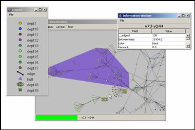
5. Manipulating and Querying Nodes and Edges
7.3 Field, Graph, Node, Edge Statistics
11.2 State Alternative: Ranges
15. Modifying the Interface/Expanding GUESS
15.1 Example 1: A Simple Button
15.2 Example 2: A Threshold Slider
15.3 Example 3: A Network Monitor
15.4 Example 4: Remote control of GUESS
15.5 Responding to clicks and other code bits
16.4 Building your own Application
Appendix B. Changes from regular Jython/Python
2. Getting Started
2.1 Installation
You’re going to need 3 things:
- The Java runtime (version 1.4+). You can get the SDK, but all you really need is the JRE. http://java.sun.com
- The .zip or .tar.gz containing all the libraries and sample files
- The Java Media Framework (JMF) which is available at: http://java.sun.com/products/java-media/jmf/index.jsp. Although in some systems this does not appear to be necessary for things to run, you may experience some problems.
We’ve included a sample guess.bat script which will launch GUESS. You’ll either want to set GUESS_HOME as a global environment variable or just in the script.
2.2 Running
We’ve greatly simplified running GUESS. You no longer have to build the database as a separate step (as in Zoomgraph). Just double click on guess.bat and you’ll be in the system or if you don’t want to type commands into the console window you can run guessallgui.bat (also need to change GUESS_HOME) which will give you an interpreter window inside the main UI window.
3. Tutorial
Let’s start with a simple example. There is a sample database (sample.gdf) in the zip file. It includes about 400 nodes and 700 edges. Take a look at it to get a sense of what goes into a data definition file. But don’t get intimidated, almost none of it is required.
Run guess.bat and we’ll be up and running. The first thing you’ll see is a dialog asking if you want to open an existing database or load a new file. We’re going to start with a new file so click the middle button. When the file chooser dialog comes up pick the sample.gdf file. You’ll then be asked if you want the new database to be persistent or in memory. Just make it in memory for now. This means that if you make changes GUESS will forget about it when you quit, but that’s fine for now. You should see something that looks like Figure 1.
The graph that popped up represents a corporate communication network. Each node represents an employee (with a department property), and each edge represents communication between two employees (with a frequency property on the edge indicating the number of undirected communications).
First, some basics: Try moving around in this space. If you hover over a node or edge you can see some details pop up. If you click on the node it will center in the display. Clicking on an edge will bring both end points into view dynamically. Left clicking and dragging on the background will allow you to move the display around. Right clicking and moving the mouse will zoom you in and out of the display. If you hold down the shift key while left dragging on the background you’ll be able to draw a rectangle to zoom to.
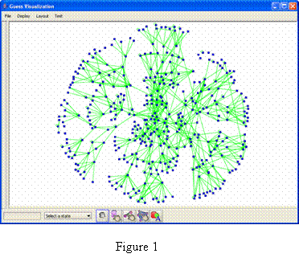
A new feature of GUESS is the ability to more easily move, delete, and edit nodes and edges. Notice the 5 buttons at the bottom of the screen. The first button on the left is the browsing mode which you start out in. The next two allow you to select nodes and edges respectively. The fourth is for manipulating convex hulls and the last allows you to annotate the document. If you click on the node tool you will be able to click on node will select it. You can then move the node around by dragging it around the screen or pull on the handles to change its size. By holding down shift as you click on the background you will be able to select multiple nodes at the same time and move them all at once (currently there is no way to resize all the nodes at the same time).
Ok, now back in the command prompt where you started GUESS you should see a prompt that looks like this “>.” Unlike Zoomgraph, GUESS uses a modified Jython interpreter (which in turn is based on Python). You can now write full programs in the GUESS language. If you type “2+2” it will evaluate to 4. If you type “test = 4” the newly defined test variable will be set to 4. The interpreter also understands if you want to enter longer routines or function definitions. For example, let’s say we want to define a factorial function. Start by typing “def fact(a):” and hit enter. The cursor will now change for a “>” to a “.” indicating that you want to write more before the command gets evaluated/executed. Now you can start typing in the rest of your code (don’t forget that in Python white space defines code blocks). When you’re done simply hit enter on a blank line.
> def fact(a):
. if (a == 1):
. return(1)
. else:
. return(a*fact(a-1))
.
> fact(5)
120
Through the interpreter you can also control what you see on the screen. For example type “center” and hit enter. The display will automatically center to include all the nodes (assuming you moved around in the initial layout). (note: type quit at any time to exit or just close the display window… don’t ctrl-c as you may corrupt your database).
Nodes can either be selected by name or through a query on their properties. For example, try typing: “(node5,node6).color = red” This will make nodes 5 and 6 red. Our sample database has other properties on nodes. Specifically, nodes here have a department. So for example, “(dept == ‘dept5’).color = black” will set all the people in department 5 to a black color.
Edges are accessed in a slightly different way. Edges have names that are the start and end nodes. For example, “(node67-node76).color = red” changes the edge between person 67 and 76 to red. You can also access edges by query. As mentioned earlier, edge in this case have an attribute called freq (frequency). So if we wanted to hide edges where the communication frequency was under 100 we would type: “(freq < 100).visible = 0” The ‘-‘ also implies directionality. If the database indicated directions (which this one doesn’t) you could talk about: node67->node76, node67<-node76, or node67<->node76, node67?node76[1].
The last mechanism for accessing edges is by defining node sets. Let’s say we only care about communications between dept 4 and 9.
- Let’s hide everything: “g.nodes.visible = 0”.
- Then show only the nodes in departments 4 or 9: “((dept == ‘dept4’) | (dept == ‘dept9’)).visible = 1”.
- Finally, we can change the color for inter-departmental edges by typing: “((dept == ‘dept4’)-(dept ==’dept9’)).color = red” This command tells the GUESS to find all nodes in dept 4 and all nodes in department 9 and then will find all edges between them (in this case only one).
- We can also do “((dept == ‘dept9’)-(dept == ‘dept9’)).color = blue” to just get intra-departmental links blue. You should see something like Figure 2.
Because we are using a real language like Python in the background we could have made things much simpler by declaring some intermediate variables. For example, the following commands would have led to the same results:
g.nodes.visible = 0
dept4 = (dept == ‘dept4’)
dept9 = (dept == ‘dept9’)
(dept4,dept9).visible = 1
(dept4-dept9).color = red
(dept9-dept9).color = blue
The GUESS system also contains a number of analysis modules to simply basic tasks (calculating graph metrics, etc.) These are described in much more detail elsewhere, but just to give you a flavor try this… First, reset the graph to its starting state. Type: ‘g.nodes.visible = 1’. Then type: ‘g.edges.color = green’ and finally ‘g.nodes.color = blue’ (you should see the same thing as what we started with). Type “density” This should calculate the density of the graph (.00827…).
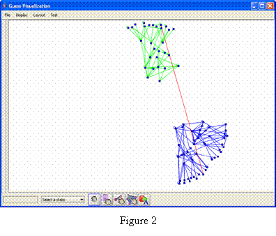
Other analysis modules do more interesting things. For example, colorize will color nodes and edges by different features. Try typing “colorize(dept)” Each node will now be a different (random) color. The colorize function will also generate a bunch of subgraphs. Then try “colorize(freq,blue,red)” which will assign a color over a linear range (from blue to red) based on the frequency of communications.
Ok, let’s try something a little more interesting:
· Lets reset everything…
g.nodes.visible = 1
g.nodes.color = blue
g.edges.color = green
· For every department we can assign a random color
colorize(dept)
· Lets say we want to create a legend so we can tell which color goes with each department. First thing is to get GUESS to group nodes by department for us
deptg = groupBy(dept)
· The variable deptg is a set of sets where each internal set is a department name. So lets create a legend for ourselves
xy = Legend()
· What you’ll now see is a blank legend screen. We’re going to populate the legend with the first element in each of deptg’s subsets.
for d in deptg: xy.add(d[0],d[0].dept)
The last line translates to: iterate over all subsets in deptg, setting each one in turn to the variable d and then running the add(..) command on the legend. The add command takes a “prototype” node as input and a text string to put next to the prototype. So we’ll take the first node from each group (i.e. a sample node from the department) and add it to the legend along with that node’s department name. You’ll hopefully see something like Figure 3 at this point. This is fairly standard Python syntax but you can get some great refresher materials on the web (see Additional Information section).
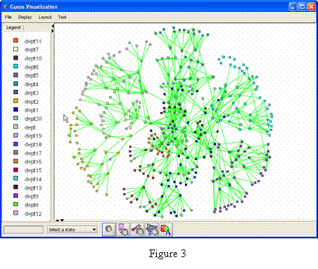
4. Getting Your Data In
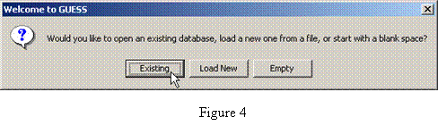In GUESS we are actively working to disentangle the frontend visualization from the backend data. However, for now we are still using the HSQLDB database to persistently store and access to this data. The database data can be persistent or in memory (for use in applets or if you just want to do some quick experiments).
There are three ways to add data into the database. The first is to apply node and edge creation commands inside the GUESS interface. These nodes will automatically get pushed into the database. The second is a limited, but fairly functional graphml loader (see notes in section 3.2). The final, and perhaps best way, to get your data in is to create a guess data file.
When you ran GUESS in the tutorial you may have noticed the set of questions in the beginng that walked you through loading the file/databases. The first menu lets you load up an existing (persistent) database or pick a file to load. This file can either by in GUESS format or GraphML (GraphML files must have the file type .xml or .graphml). If you select the “Load New” you will select the file that contains your data. You will then be asked if you want this new file to be persistent or in memory. Selecting “in memory” will load the data into a memory resident database which will be vanish once you quit GUESS. If you select “persistent” you will be instructed to pick a directory for your database files and then a name for the database (there end up being a few files that make the database persistent so you may want to create a “database” directory if you don’t like your directories to be littered with files).
4.1 The GUESS .gdf format
The file structure for the .gdf files is very simple. We will basically define the nodes with their properties followed by the edges with theirs.
The node definition section starts with the line: “nodedef> name”
The nodedef line will tell GUESS what the format is of the following lines that actually describe nodes. In the simple case we are just going to have one column on each line, the node name. Nodes are required to have unique names (identifiers). You will want to avoid using anything that is not a valid Python variable name here if you want to access the nodes by this name. When GUESS starts up, it will automatically create variables for you for each node. So if you have a node called foobarbaz, you’ll be able to talk about foobarbaz.color.
The simplest file looks something like this:
nodedef> name
foobar
which tells GUESS that we want a node called foobar. All other aspects of the node (color, visibility, style) will be extracted from defaults. After name (the only required column), you may use pre-defined columns and new columns to set and control extra node properties. Pre-defined columns are:
· x – a double representing the node’s x location (default: random)
· y – a double representing the node’s y location (default: random)
· visible – a boolean indicating if the node should be displayed (default: true)
· color – a string, the default color of the node (default: “blue”). We have a long list of color names that we know about, but if you didn’t want to use one of those you could quote an rgb triplet (e.g. “124,234,222”)
· fixed – boolean, can the node be moved? (default: false)
· style – an int indicating which style of node to use (default: 1). Currently GUESS maps: rectangle = 1, ellipse = 2, rounded rectangle = 3, text inside a rectangle = 4, text inside an ellipse = 5, text inside a rounded rectangle = 6, and an image = 7
· width – double, node width (default: 4)
· height – double, node height (default: 4)
· label – string, a label for the node in the visualization (default is the name)
· labelvisible – boolean, should we show the label? (default: false)
· image – string, a filename of the image to use if the node style = 7
These properties can also be controlled and accessed once GUESS is actually running. You can type “foobar.x” to get the x coordinate for foobar and “foobar.height = 20” to set foobar’s height.
These pre-defined attributes can be overridden by simply adding them to the list in the nodedef line. For example:
nodedef> name,x,y,color
foo,0,0,blue
bar,100,100,red
This will tell GUESS that you want two nodes: a blue one called foo at (0,0) and a red one called bar at (100,100). Notice that you don’t have to quote things explicitly (strings versus numbers). The system should figure that out for you (unless your string has a comma in which case you’ll want to put it in quotes).
This pre-defined list is simply our choice on node properties that have a specific meaning to the visualization. We may add more in the future (font sizes, colors, complex shape definitions, etc.), but this is the set for now. Usually you will want to add extra attributes to the node definitions. For example, you may want to have a department property or maybe a salary. Unlike the pre-defined nodes you will need to tell GUESS what kind of property this is (string, integer, etc.). We use standard SQL to define these aspects. For example:
nodedef> name,style,dept VARCHAR(32),salary INT default 40000
foo,1,dept1,50000
bar,2,dept2,52000
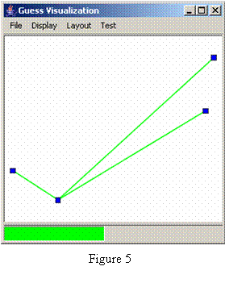This file tells GUESS that you want to have two user defined columns, dept (the department) and salary. Notice that we can define a default salary so that any new nodes added after the load will take on the default value. After running GUESS on this .gdf file you will have two nodes and be able to access these properties in the same way as the pre-defined ones. For example, typing “foo.style” will return 1 and “foo.salary” will return 50000.
Edges are defined in a very similar way, the only required columns for edges are “node1” and “node2” which are the names of the two nodes you are connecting. A simple example is something like:
nodedef> name
a
b
c
d
edgedef> node1,node2
a,b
a,c
a,d
Which defines a star network centered on node a. It will look something like Figure 5.
Edges, like nodes, can contain pre-defined and user-defined attributes in the definition lines. Valid pre-defined edge properties are:
· visible – a boolean indicating if the edge should be displayed (default: true)
· color – a string, the default color of the node (default: “green”).
· weight – a double indicating the edge weight (default: 1, but not currently used for calculations)
· width – double, node width (default: .3)
· directed – boolean, indicating edge directionality (default: false, undirected/bidirected). If true, this will assume node1 is the source and node2 is the destination.
· label – string, a label for the node in the visualization (default is the edge weight)
· labelvisible – boolean, should we show the label? (default: false)
One critical thing to note is that duplicated edges are not supported. That is you can not create more than one edge of the same direction between two nodes. At most you can have 3 edges between two nodes (a->b, b->a, and a-b). Recall that a-b and a<->b are considered to be the same thing. GUESS will try to remove duplicate edges (e.g. a->b and b<-a) for you (when loading the file), but sometimes this will fail and you will get an exception. You can simulate this behavior by adding extra fields.
Again, just as in the case of nodes, any user-defined edge attributes can be added by putting them on the edgedef line. Extending our previous example:
nodedef> name,style,dept VARCHAR(32),salary INT default 40000
bob,1,dept1,50000
john,1,dept1,49000
alice,2,dept2,52000
edgedef> node1,node2,directed,relationship VARCHAR(32)
bob,alice,true,reports to
john,alice,true,reports to
bob,john,false,colleague of
Using something like this you will be able to say “(bob-john).relationship” in GUESS and get back “colleague of.”
4.1.1 Node Styles
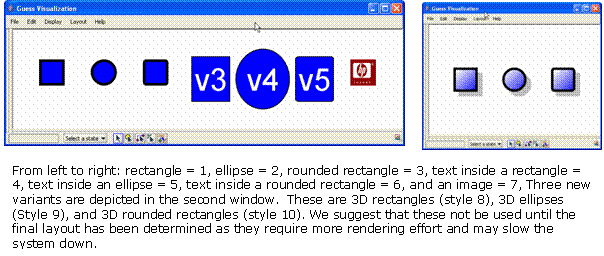As we described above there are a number of predefined nodes styles. The following image shows these styles:
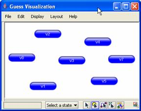Node style 7 has its “image” field set to hplogo.jpg (a local file). It is also possible to “push” an image (a java object) to an image style node. This allows you to create new images dynamically. For example, CustomNodes.py in the scripts directory will generate an “aqua” style button for each node when convertAllToAqua() is called. The result would look something like:
Finally, it is now possible to define your own polygon shapes for nodes. By generating a style id (an integer > 100) and associating it with a Shape object in the shapeDB you will be able to create your own shapes. For example, we can create diamond, triangle, or star shapes using the following code (also in shapetest.py):
from java.awt.geom import GeneralPath
from java.awt import Polygon
import jarray
xpoints = jarray.array((10,5,0,5),'i')
ypoints = jarray.array((5,10,5,0),'i')
diamond = Polygon(xpoints,ypoints,4);
shapeDB.addShape(104,diamond)
xpoints = jarray.array((55, 67, 109, 73, 83, 55, 27, 37, 1, 43),'i')
ypoints = jarray.array((0, 36, 36, 54, 96, 72, 96, 54, 36, 36),'i')
star = Polygon(xpoints,ypoints,10)
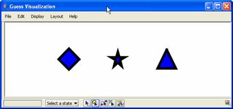shapeDB.addShape(105,star)
triangle = GeneralPath()
triangle.moveTo(5,0)
triangle.lineTo(10,5)
triangle.lineTo(0,5)
triangle.lineTo(5,0)
shapeDB.addShape(106,triangle)
Running this script and applying the commands v0.style = 104, v1.style = 105, and v2.style = 106 results in the following picture:
4.1.2 Exporting GDF Files
To export the current graph as a GDF file you can simply type exportGDF(“filename.gdf”) which will output the current database as a GDF file named filename.gdf.
4.2 GraphML
GraphML (http://graphml.graphdrawing.org/)
is an XML file format for representing graphs. We support a limited set of
this format (no subgraphs or hyperedges). The main constraint is that nodes
need to be defined before edges (this will be fixed later on). Attribute
names in keys that have the same names as those pre-defined node and edge
properties above can be used to control the visual aspects of the graph. Keys
with other attribute names will be used to construct additional properties for
nodes and edges. Take a look at the file test.xml as a sample.
5. Manipulating and Querying Nodes and Edges
From the discussion on databases it should be evident that whatever attributes you define (or are pre-defined) on nodes and edges are accessible through the interpreter. You would access these as you would any attribute of a Python object. When the graph is loaded into memory GUESS will create node and edge objects for you in the top level name space of the interpreter. Nodes will have the same name as their name property.
Going back to our simple office example:
nodedef> name,style,dept VARCHAR(32),salary INT default 40000
bob,1,dept1,50000
john,1,dept1,49000
alice,2,dept2,52000
edgedef> node1,node2,directed,relationship VARCHAR(32)
bob,alice,true,reports to
john,alice,true,reports to
bob,john,false,colleague of
We will have 3 nodes defined in the top level namespace, bob, john, and alice. We can get a property by using the construct: <nodename>.<propertyname> and set a property by doing <nodename>.<propertyname> = <value>. If the property represents a visual aspect of the node or edge the set operation will immediately modify the visualization. Any changes will also be committed to the database. Some examples are:
- bob.color = green (immediately color the bob node green)
- alice.dept = “dept3” (set alice’s dept attribute to “dept3”)
- john.salary = bob.salary * 1.5 (set john’s salary to 1.5 x that of bob’s)
Nodes also have a few “special” attributes which are basically shortcuts. For example, the size attribute will set both the width and the height of a node at the same time. So bob.size = 20 is the same as bob.width = 20 and bob.height = 20.
Edge work in a very similar way but they are not set in the top level namespace. Instead you would access the edge between two nodes by placing a “-“ between them (or “<-“, “->”, or “<->” for directed nodes). If you want to modify or access a node property you need to remember to place the edge definition in parentheses. For example:
- (bob->alice).color = black (to make the link between bob and alice black)
- (bob-john).relationship = “joint project” (to redefine the relationship between bob and john)
For an edge you can always ask for the attributes node1 and node2 to get the end points (e.g. (bob-john).node1). For directed edges you can additionally ask for the source and destination attributes (e.g. (bob->alice).source returns bob).
At certain times you may want to group nodes and/or edges together to modify or access their attributes at the same time. This is simply done by putting objects in parentheses (standard Python). What is unique the Python enhancement used by GUESS is that you can now modify an attribute of every node in that set at the same time. For example (bob,john).color = red will set both the bob and john nodes to red. This will also work for (bob,john,alice-bob).color = blue because nodes and edges have the same attribute (color). The graph attribute nodes (e.g. g.nodes) and edges (g.edges) return a group of all nodes and edges in the graph respectively. So the command g.nodes.color = black will set all nodes in the graph to black.
One trick of this syntax is finding edges between two sets of nodes. A simple example is the command: (bob,john)-alice which will return two edges bob-alice and john-alice (we could have also typed (bob,john)-(alice) but since the second set was only composed of one node the extra parentheses were not necessary). If you are looking for additional ways to group nodes take a look at the subgraph section later on in this manual.
A final note on edge and node visibility:
- If a node is made invisible all edges to that node will also be made invisible.
- If a node is made visible all edges that were previously invisible between that node and any other visible node will be made visible.
- If an edge is made invisible the two nodes at the endpoint are left visible.
- If an edge is made visible any previously invisible endpoint nodes will be made visible.
5.1 Queries and Sets
In addition to defining nodes for you in the top level namespace, GUESS will also define special objects called fields which will have the same name as node and edge properties. For example, the field “height” exists as a variable named height. These variables are used in the construction of queries that select specific nodes. For example, for our previous example GUESS generated additional fields called dept, salary, and relationship. Using these and the operators ==, <=, >=, !=, <, >, and like we can begin to select out nodes and edges that match certain criteria. Some examples in this instance are:
- In order to grab all nodes in department 2 we would type:
- dept == ‘dept2’ (answer: alice)
- In order to find nodes with salary less than or equal to 50,000 we would type:
- salary <= 50000 (answer: bob,john)
- To find all edges with a relationship matching the regular expression “reports*” we would type:
- relationship like “reports%” (answer: bob->alice, john->alice)
- If we wanted to make all square nodes red we would do:
- (style == 1).color = red
You can also make more complicated queries by combining sub-expressions with the & and | operators (and/or respectively). For example:
- If we want all nodes in dept1 with a salary of 50000 or more we would do:
- (dept == ‘dept1’) & (salary >= 50000) (result: bob)
- If we wanted all nodes in dept1 or that have a salary of over 50000 we would type:
- (dept == ‘dept1’) | (salary > 50000) (result: bob, alice, john)
One important note is that for fields that belong to nodes and edges (e.g. color, visible, width) the field object in the top level namespace will default to node attributes. The expression “color == blue” will return nodes that are blue. In order to specify that you want an edge or node attribute, prepend the attribute name with “Node.” or “Edge.” This means that to get all blue edges we would use the expression: “Edge.color = blue.”
In order to find all nodes or edges not in a given set, you may use the complement method. The method will take either a set or individual node/edge as an argument and return a set of all nodes/edges not in the set. If the argument set contains only nodes the result will contain only nodes. Similarly if the set contains only edges the result will contain only edges. If both nodes and edges are in the input set nodes and edges will be returned in the output set. Example usage includes:
complement(v44) – all nodes other than v44
complement(v44?v55) - all edges not between node 44 and 55
complement((v44,v44?v55)) - all nodes AND edges not in the set
complement(dept == ‘dept1’) – all nodes not in department 1
If a set contains a mixture of nodes and edges you can apply the findEdges() and findNode() methods to extract just the nodes or edges.
In addition to the operations listed above there are a number of constructs/operators that are specific to state based operations. Take a look at the States and Animations chapter to get a sense of those.
5.2 The Information Window
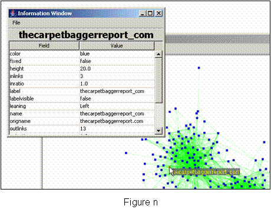In order to see and modify node and edge properties quickly GUESS contains an information window that can be opened by typing: infowindow(). As you mouse over nodes and edges you will see their fields and values displayed in this window (see Figure n). You will also be able to modify these fields by clicking on the value you want to change and simply typing the new value and hitting enter (immutable values such as name will not change).
You can force the information window to display details for a specific node or edge by typing InfoWindow.details(name) where name is the name of the node or edge you would like to see.
|
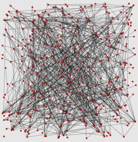 |
|
|
g.randomLayout() |
g.frLayout()
|
|
|
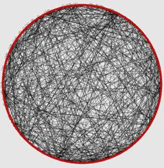 |
|
g.gemLayout() |
g.circleLayout()
|
|
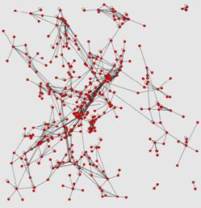 |
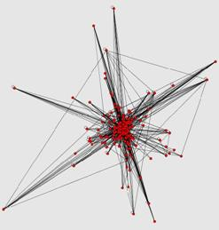 |
|
g.isomLayout() |
g.mdsLayout() (after weight set to freq) |


|
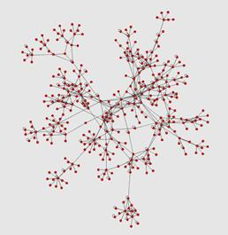 |
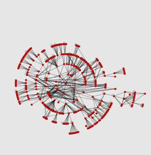 |
|
g.physicsLayout() |
g.radialLayout(v5) |
|
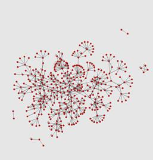 |
|
|
g.springLayout() |
|
6. Laying out Graphs
Currently GUESS provides the following layouts
- Random
- Commands: random() or random(width,height)
- Randomly lays out nodes in a 1000 x 1000 pixel space or width x height if specified
- Circlular
- Commands: circleLayout()
- Lay all nodes in a circle
- Kamada-Kawai
- There are currently 3 Kamada-Kawai implementations in GUESS: kkLayout(), jkkLayout1(), and jkkLayout2()
- The first was transferred from Zoomgraph and the second two are the KKLayout and KKLayoutInt from the JUNG toolkit
- Note: the kkLayout command will fail on graphs that have multiple components
- Spring Layouts
- There are currently 2 Spring layout implementations in GUESS: springLayout(…) and jSpringLayout(…)
- The first was transferred from Zoomgraph. The second is the JUNG implementation.
- Both will accept a “max” parameter to indicate how many loops should be run
- Fruchterman-Rheingold
- There are currently 2 Fructerman-Rheingold implementations in GUESS: frLayout() and jfrLayout()
- The first was transferred from Zoomgraph and contains a slight modification to ensure nodes do not overlap. The second is the JUNG implementation
- GEM Layout
- Commands: gemLayout()
- Lay all nodes in using the GEM algorithm
- Physics Layout
- Commands: physicsLayout(…)
- Lay all nodes in using a “physics” (spring-type) layout algorithm. You may use a “max” parameter to indicate when this should stop.
- Note: this is a port of http://www.schmuhl.org/graphopt/
- Multi-Dimensional Scaling Layout
- Commands: mdsLayout()
- Does a mutli-dimensional scaling on the graph where node-node distances are defined by the connecting edge weight
- Note: currently uses the “weight” attribute on edges to determine similarity/dissimilarity. This will be generalized to any property in the future.
- Radial Layout
- Commands: radialLayout(center)
- Places the center node in the center and places nodes connected to it at increasing radii based on shortest path.
- Circular-Constrained Layout
- Commands: g.circleLayout(field,center)
- Places the center node in the center and each of its neighbors around it with the radius based on value of field (works for both edge and node fields).
- Rescaling layouts
- Commands: rescaleLayout(height,width) or rescaleLayout(percent)
- Rescale all the nodes to fit in an array of height x width or reduce/increase the dimensions by %percent.
- Edge Shifting
- Command: readjustEdges()
- Shift overlapping edges a little bit along a curve so that you can see that there are multiple edges between nodes. See Figure n for an example.
- Bin Pack
- Command: binPackLayout()
- This will pull together disconnected graph components into a nicer view.
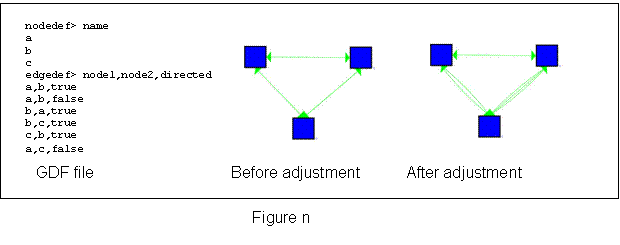
By and large layouts are executed in their own loops so that they do not take over the UI rendering pipeline. Layouts will also center the display to fit all the nodes. This is also an asynchronous process. At times you may want to add layout operations into your scripts. You may wish to make use of the commands:
- setSynchronous(state) where state is a Boolean (true/false) which will tell the layout algorithms whether to run in their own thread (default false, the system is asynchronous)
- centerAfterLayout(state) where state is a Boolean (true/false) which will allow/prevent GUESS from centering after a layout (default true).
[to add: discussion on
more programmatic/finer control of layouts]
7. Analysis Commands
7.1 Clustering
Because we are making use of the JUNG system in GUESS we can take advantage 3of the many clustering algorithms already implemented there. These commands will generally generate a set of sets that can then be used in any way you want. Current commands include:
- biComponentCluster(): BiComponent Clustering
- edgeBetweennessClusters(): Edge Betweenness Clustering (Newman)
- weakComponentClusters(): Graph Components
A simple use of these commands is to color each cluster differently. For example:
clusts = weakComponentClusters()
for z in clusts:
z.color = randomColor()
GUESS will also generate groupings (and sorts based on any field). This is done by the groupBy(field) and groupAndSortBy(field) methods. Using these we could color each edge in the sample database by frequency.
clusts = groupAndSortBy(freq)
clustcol = generateColors(blue,red,len(clusts))
for z in range(0,len(clusts)):
clusts[z].color = clustcol[z]
Because resizing and coloring nodes and edges is a fairly straightforward operation we have created a number of shortcuts described below.
You may also make use of the groupBy/sortBy/groupAndSortBy methods when dealing with sets. For example, say we pull out only a subset of nodes (e.g. all those in department 1) and would like to see them ordered by salary (note that we don’t actually have a salary field defined in the sample data set):
dept1 = (dept == ‘dept1’)
dept1.sortBy(salary)
or if we wanted to group them by job function we could do:
dept1.groupBy(jobfunc)
7.2 Visualizing Fields
As shortcuts to the groupAndSortBy followed by color and size changes we a number of shortcuts:
- colorize(field) Will randomly assign a color to each group based on the field
- colorize(field,startcolor,endcolor) Will assign a color between startcolor and endcolor based on the sorted groups of field
- resizeRandom(field,start,end) Resize graph components based on field to a random value between start and end
- resizeLinear(field,start,end) Resize the graph components linearly between start and end based on field
7.3 Field, Graph, Node, Edge Statistics
There are a number of special properties on (numerical) fields that allow you to get a quick sense of the average, minimum, maximum, and summed values. This can be done by appending the field variable with .avg, .min, .max, and .sum respectively (e.g. freq.min will return the minimum frequency value).
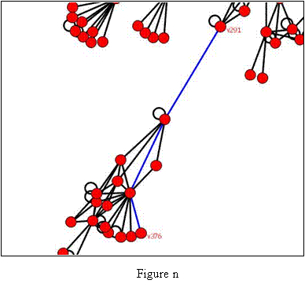
A number of node and edge fields are calculated when they are first accessed. These include: betweenness, pagerank, degrank, hits, and rwbetweeness which correspond to the Betweenness, PageRank, Degree Distribution Rank, HITS rank, and Random-Walk Betweenness ranks. Also available are indegree, outdegree, and totaldegree. Because many of these take a long time to compute, the first time you access the property the value is calculated and cached. Changes to the graph will require an update to these ([need to describe]).
For example, we can calculate and color based on betweenness by doing:
v1.betweenness
g.colorize(Node.betweenness,red,blue)
You can also ask a node for the shortest path to other nodes by either applying the unweightedShortestPath(target) or dijkstarShortestPath(target) methods. A list of edges representing the shortest path will be returned to you. In figure n we have found the shortest path between v291 and v376 and changed the color to blue through the command:
(v291.unweightedShortestPath(v376)).color = blue
7.4 Random Graph Generation
If you would like to have GUESS generate a random graph for you there are a number of existing options available in JUNG and exposed through GUESS. To use these you may want to start with an empty database and use one of the following:
- makeSimpleRandom(nodes,edges)
- makeBarabasiAlbertRandom(vert,edges,evolve)
- makeEppsteinRandom(nodes,edges,r)
- makeErdosRenyiRandom(nodes,p)
- makeLattice1DRandom(nodes,tor)
- makeLattice2DRandom(nodes,tor)
- makeKleinbergRandom(nodes,clust)
[need
to add descriptions]
8. Modifying graphs
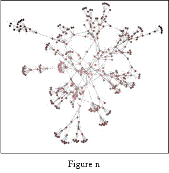Adding nodes and edges is a fairly straightforward process. To add a new node you simply invoke the addNode(name) command which will create a new node with the default characteristics and the name “name.” Adding an edge is also simple but there are two commands depending on if you want a directed or undirected/bidirected edge.
- addDirectedEdge(source,destination)
- addUndirectedEdge(node1,node2)
- addEdge(node1,node2) is equivalent to addUndirectedEdge(…)
An example of creating two nodes and adding a directed edge between them would be:
addNode(“vx”)
addNode(“vy”)
addDirectedEdge(vx,vy)
Note that GUESS will create variables called vx and vy in the top level namespace.
Removing is done by calling:
- removeNode(node) – A list including the removed node(s) and any removed edges is returned with this call
- removeEdge(edge) – Returns a list including the removed edge(s)
- remove(set of nodes and edges) – A list including the removed node(s) and edge(s) is returned from this call
GUESS will not eliminate a reference to a node that has been removed from the namespace. As of the .6 version of GUESS, remove methods return back a set of objects that have been removed from the graph. This is useful if you would like to reinsert nodes or edges.
Continuing in our previous example you could remove the node from the graph and put it back in later. This may be useful for working through different graph variants:
removeNode(vx)
…
addNode(vx)
Prior to the .6 version of GUESS, removing and re-adding nodes and edges made GUESS forget about the values of user fields. This is no longer the case. Deleted nodes/edges are now held in a special state table called “_deleted.” When you make an ordinary query (e.g. “weight > 5”) GUESS will only return matched elements that are still in the graph. If you would like to find deleted edges that match the criteria you can use the state notation (see states and dynamic graph sections) and type: “weight[‘_deleted’] > 5”
Adding a new field is equally simple. You simply decide which type of field (node or edge) you want to add and then invoke the method:
- addNodeField(name,type,default)
- addEdgeField(name,type,default)
The name is the new column name, the type is int value corresponding to the java.sql.Types class (e.g. Types.INTEGER, Types.BOOLEAN, Types.TINYINT, Types.VARCHAR, etc.) and the default is an object corresponding to the default value.
Here’s an example of the command in action. We’re going to add a new node field called shortest and set it to the distance of that node to the v4 (in the sample database).
addNodeField(“shortest”,Types.INTEGER,Integer(0))
for n in g.nodes:
n.shortest = len(v4.unweightedShortestPath(n))
colorize(shortest,pink,black)
This command will result in the Figure n.
9. Output Commands
GUESS is able to export various image formats. You can either do this by selecting the export option from the file menu or utilizing one of the following commands (their function should be clear from the name):
- exportGIF(filename)
- exportJPG(filename)
- exportPDF(filename)
- exportPS(filename)
- exportEPS(filename)
- exportSVG(filename)
- exportSWF(filename)
- exportJAVA(filename)
- exportCGM(filename)
- exportEMF(filename)
- exportPNG(filename)
Note that these commands (at present) export a screenshot of what is visible in the window. If you would like to capture the full screen use the appropriate export command in the File menu.
In addition to image formats GUESS will also allow you to save a (quicktime) movie of what is happening on the screen. To start a movie type: startMovie(fps,filename) where fps is the frames per second. Note that each redraw of the GUESS visualization is considered a frame but this does not necessarily map to real time). You may want to set the frames per second to be very low to render movies that appear in real time. The command stopMovie() will stop the movie recording.
[non-image formats (GraphML, pajek, etc.)]
10. Subgraphs
[API not finalized]
11. States and Animations
Graphs are frequently dynamic objects where node and edge properties are changing. In order to support graphs of this nature, GUESS allows users to save and load states of the graph where nodes and edges can appear and disappear and where properties can change in value.
The commands for doing this are simple. Simply type:
- ss(name) to save a state named “name” and
- ls(name) to load a state named “name”
All node and edge features will be updated to reflect the new state.
In order to visualize transitions between different states, GUESS provides a morph command that will smoothly change nodes and edges from various states. Simply type morph(time,statename) and the graph will change from the current configuration to state statename over the time milliseconds.
In combination with the movie output features one could save a movie of a morph by doing:
ss(“foo”)
… do some stuff…
ss(“bar”)
startMovie(20,”out.mov”)
morph(50000,foo)
stopMovie()
We suggest the use a long morph time for smooth animations. Again recall that the output will not be in real time. A 50 second animation may only output a 3 second movie depending on the number of nodes, edges, and processing time.
Nodes and edges move in and out of visibility by adjusting their transparency and they will gradually fade or appear from the background. You may also notice that they disappear too late or appear too early and clutter the display. GUESS allows you control this through a few methods:
- Morpher.setNodeDisappearBy(n) and Morpher.setEdgeDisappearBy(n) will control the disappearance of nodes and edges. The value of n should be between 0 and 1 (1 is the default, so graph elements stick around until the very end). If we wanted them to instantly disappear we would use a value of 0. We find that somewhere around .2 works well (i.e. elements vanish quickly but are still on the screen).
- Morpher.setNodeAppearAfter(n) and Morpher.setEdgeAppearAfter(n) will control the appearance of nodes and edges. The value of n should be between 0 and 1 (0 is the default here). We find that somewhere around .8 works well.
[to add: camera tracking, multi-state morphs]
11.1 State Sensitive Queries
A feature of GUESS (as of the .6 release) is the ability to query for matching nodes across multiple states using a “subscript” operator. For example, if we saved the state of the graph and called the state “oldorg” (for the “old organization”) of an node. We could say:
v44[‘oldorg’].dept
To access the value of node v44’s old department. Alternatively, if we had different layouts at different states (states 1,2,3,…) we could ask for the old coordinates for a node by doing:
v44[1].x and v44[1].y to get the x and y coordinates at state 1
Note that at present we do not support changing these values (e.g. v44[1].x = 20 will return an error).
If we want to do comparisons or selections across multiple states it is possible to use the same subscript syntax on the field variables. For example, if we define two states, 1999 and 2000, and have different frequencies of communication across the social network edges we could find all edges where individuals communicated more in 2000 than 1999 by doing:
freq[2000] > freq[1999]
Note that you can mix this with standard queries. For example, all edges that are in that set above and are currently visible:
(freq[2000] > freq[1999]) & (Edge.visible == 1)
11.2 State Alternative: Ranges
Frequently we have graphs where nodes and edges simply exist or not in different time periods. We are not interesting in varying any other dynamic property except for existence. For example, a node is active at time 0-5 and 8-12. We do not want to create a state for every time period. A new (.6+) feature of GUESS is a special range index. You may not specify a field for nodes and edges that functions to define these ranges.
The valid syntax for this textual field is a comma delimited set of ranges or individual times. For example: “1-2,5,10-12” indicates that the range of this object is between time periods 1 and 2, at time period 5, and between period 10 and 12. Using an interval tree, GUESS will create an index that can be used to select nodes and edges that are contained in, overlap, contain, or match a range exactly. The operators for this are roverlaps, rcontains, rcontained, and rexact and may be applied to the “Node” and “Edge” objects in the form of:
object operator range
where object is Node or Edge, operator is one of roverlaps, rcontains, rcontained, and rexeact, and the range is either a single number (e.g. 1 which implies a range of 1 to 1), a pair of numbers (e.g. (1,2) which implies a range of 1 to 2), or a string range (e.g. “5-8” which implies a range of 5 to 8).
An example may help. Let’s say we have a simple GDF file:
nodedef> name, range VARCHAR(32)
v0,"1-2,6-9"
v1,"1-3,8-15"
v2,"1-1"
v3,"5-12"
v4,"20-20"
edgedef> node1,node2,directed
v0,v1,true
v0,v2,true
v0,v3,true
v3,v4,true
v2,v4,true
v1,v4,true
We can do the following:
- Node roverlaps (2,5) which returns v0 and v1
- Node rcontains 5 which returns v3
- Node rcontained (19,21) which returns v4
- Node rexact (5,12) which returns v3
By default, GUESS will try and find a “range” field as soon as you invoke one of the range operations. You may also specify an alternative field using the following command (with a field as an argument):
Node.setRangeField(…)
Edge.setRangeField(…)
Note that if you change the field GUESS will not change the index automatically (e.g. if you say v0.range = ’20-25’ the range will not get updated). In order to force an update, use one of the following commands:
Node.rebuildRangeIndex()
Edge.rebuildRangeIndex()
12. Legends
Though you can see basic examples of legends in the previous examples the basic commands are outlined below:
- Legend() create a new legend and returns the reference
- legend.add(object,text) where object is either a node, edge or convex hull. This command will add the object as a “prototype” and use the text as the title next to it. The text must be unique for a given legend.
- legend.remove(text) will remove the object labeled by text from the legend
- legend.removeAll() removes all objects from the legend
As of the 0.6 release of GUESS we also include a special GradientLegend object to visualize continuous data. The syntax for this GradientLegend object is:
· GradientLegend(start_color, end_color, min, max, tick_mark_every)
The visualization will show the min and maximum value with a tick mark every tick_mark_every units. The following code generated the figure below:
colorize(freq,red,yellow)
GradientLegend(red,yellow,freq.min,freq.max,10)
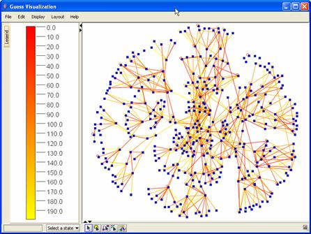
13. Interface to R
Although it has greatly improved since the Zoomgraph implementation, the connection to R is still in the process of being defined. GUESS, like Zoomgraph, makes use of the Rserve to connect to R. The program is very easy to install for both windows and Unix distributions (see: http://stats.math.uni-augsburg.de/Rserve/).
Once you have Rserve installed, start it up. By default GUESS will attempt to connect to the local machine’s Rserve process. If you are running R somewhere else you will want to execute the command r.initConnection(“host”) where host is the host to connect to.
There are two main interfaces to R through GUESS. The first allows us to set variables inside the R environment and pull back values. The second, an “R mode,” reroutes every command typed in GUESS directly to R. Note that at present this mode is only available for the command line version (not the GUI version) of the interpreter.
To set variables in R, we use the syntax: r.variable_name = value. For example, r.x = 5 will set a variable called x in the R space to 5. You may also pass double and integer arrays and double arrays to R in this way. To extract variables from R, you would use r.variable_name. For example:
r.x = 5
r.y = 4
foo = r.x – r.y
Will set two variables in the R space to 5 and 4, and will then set the value of foo (in GUESS) to be the difference between them (1.0). Beyond simple variables and arrays, the command r.graph = g will set the graph variable in R to a matrix corresponding to the GUESS graph.
If you would like to invoke R commands you would tell GUESS to go into the “R mode” by typing rmode. You will notice that the prompt will change to “R>” to leave this mode simply type a period by itself on a line and press enter (i.e. “.”). Note that unless the R connection is broken you will be able to switch in and out of R mode without losing data. When in R mode you will be able to execute whatever R commands you like. A new feature of GUESS is that plots are rendered to a file that is then displayed in GUESS. For example, try this:
r.graph = g
rmode
library(sna)
gplot(graph)
In this mode you will be able to do whatever analysis you want. In order to pull data back into GUESS simply set some variable to the data you want to retrieve, exit R mode and use the “r.variable_name” syntax to pull the data back. A simple example would be:
rmode
z<-500
.
r.z
This
sequence of commands would
set the value of z to 500 in R and then retrieve that value in GUESS.
14. Convex Hulls
Convex hulls can be added around a set of nodes by using the command createConvexHull(nodeset,color). This will create and color a convex hull around the nodeset and return a reference to the convex hull object. To delete a specific convex hull you would type removeConvexHull(hull), and to get a list of all hulls you would use getConvexHulls().
Note that convex hulls (especially transparent ones) make various operations a little slow so you may want to not use them until your are settled on a layout.
To get the figure below we did:
clusts = groupBy(dept)
for c in clusts: createConvexHull(c,randomColor(120))
The additional value we pass to randomColor indicates the transparency (0-255) for the resulting random color. This allows us to see through hulls.
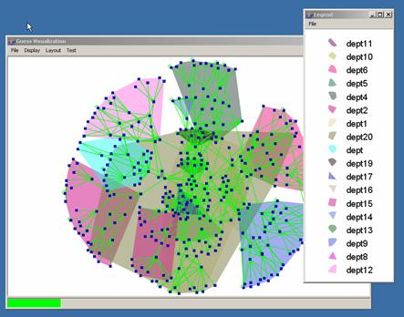
15. Modifying the Interface/Expanding GUESS
There are various ways in which you can modify the GUESS interface. The easiest is to make use of the docking infrastructure by extending the DockableAdapter class inside Jython.
15.1 Example 1: A Simple Button
Lets say we want to modify the interface to have a button that when pressed will center the display. We could create a new type of object called a dockexample1 in the following way:
import java # import what we need
import javax.swing
import com
class dockexample1(com.hp.hpl.guess.ui.DockableAdapter):
def __init__(self):
# create a new button called center
testButton = JButton("center")
# every time the button is pressed, center the display
testButton.actionPerformed = lambda event: center()
# add the button to the toolbar
self.add(testButton)
# add the toolbar to the main UI window
ui.dock(self)
def getTitle(self):
# define the title in the window
return("dockexample1")
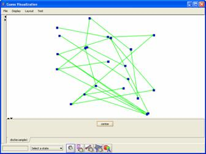If we save this script to a file called example.py we can make use of it in GUESS by executing the file:
execfile(“example.py”)
and then creating a new dockexample1 object:
dockexample1()
15.2 Example 2: A Threshold Slider
Let’s try for a slightly more interactive example. Recall that in our sample database we have an edge feature called freq. If we want the user to be able to control the frequency easily we can easily create a toolbar with a slider that hides and shows edges depending on the user controlled threshold. The code and screenshot for this included below:
import java
import javax.swing
import com
class dockexample2(com.hp.hpl.guess.ui.DockableAdapter):
testSlider = JSlider() # keep the label and slider
label = JLabel("Frequency threshold (0) ")
def __init__(self):
# set up the slider limits
self.testSlider.setMinimum(freq.min)
self.testSlider.setMaximum(freq.max + 1)
# set up the slider visual properties
self.testSlider.setMajorTickSpacing(50)
self.testSlider.setMinorTickSpacing(10)
self.testSlider.setPaintTicks(true)
self.testSlider.setPaintLabels(true)
self.testSlider.setValue(freq.min) # default value
# every time the mouse is released call the "sc" method
self.testSlider.mouseReleased = self.sc
# add the label and slider to the UI
self.add(self.label)
self.add(self.testSlider)
# dock the new panel into the UI
ui.dock(self)
# call the event function once so that the
# display matches the slider value
self.sc(None)
def getTitle(self):
return("dockexample2")
def sc(self,evt):
# get the value
val = self.testSlider.getValue()
# show all the nodes
g.nodes.visible = 1
# hide all edges under value and show all over
(freq < val).visible = 0
(freq >= val).visible = 1
# hide nodes not connected to visible edges
self.hideDisconnectedNodes()
# set the label text
self.label.setText("Frequency threshold ("+str(val)+")")
def hideDisconnectedNodes(self):
# keep a list of nodes to hide, java doesn’t
# like us to modify objects as we iterate over them
toHide = []
for nod in g.nodes: # for all nodes
vis = 0 # default to invisble
# for all edges connected to this node
# if there is any visible edge
# keep this node visible
for ed in nod.getOutEdges():
if (ed.visible == 1):
vis = 1
break
if (vis == 0): # should we hide the node?
toHide += [nod]
# hide all the nodes we put in our list
toHide.visible = 0
15.3 Example 3: A Network Monitor
Our next example is more ambitious. We will visualize a network topology and simulate traffic on it. We would like to visually keep track of network load to both edges and nodes as well as have a “heartbeat” monitor tracking average load on the system (see the figure). While in a real setting we may pull this data from a network or somewhere else, in our example we are going to create a “driver” thread which will generate a random network and random values. The whole scheme relies on the creation of two objects, the dockexample3 which is the chart at the bottom, and the example3driver object which drives the simulation.
# import stuff from jfreechart (see www.jfree.org)
from org.jfree.chart import *
from org.jfree.chart.axis import *
from org.jfree.chart.plot import *
from org.jfree.data.time import *
from org.jfree.data.xy import *
from org.jfree.ui import *
import java
import javax.swing
import com
import time
# this is our toolbar
class dockexample3(com.hp.hpl.guess.ui.DockableAdapter):
# need to keep some top level variables (like the
# min and max for the chart)
series = TimeSeries("Random Data",
Class.forName("org.jfree.data.time.Millisecond"))
lastValue = 100.0
raxis = None
_min = 30.0
def __init__(self):
# set up the jfreechart object
dataset = TimeSeriesCollection(self.series)
jfc = ChartFactory.createTimeSeriesChart("Network Heartbeat",
"Time","Value",dataset,true,true,false)
plot = jfc.getXYPlot()
jfc.setLegend(None)
axis = plot.getDomainAxis()
axis.setAutoRange(true)
axis.setFixedAutoRange(60000.0)
axis = plot.getRangeAxis()
axis.setRange(self._min,self._max)
self.raxis = axis
chartPanel = ChartPanel(jfc)
# we want to tell the GUESS ui how big to make this
# object, and then we dock it
chartPanel.setPreferredSize(java.awt.Dimension(600, 150))
self.setPreferredSize(java.awt.Dimension(600, 300))
self.add(chartPanel)
ui.dock(self)
def getTitle(self):
return("dockexample3")
def update(self,val):
# change the min and max values on the chart
if (val > self._max):
self._max = val
if (val < self._min):
self._min = val
self.raxis.setRange(self._min,self._max)
# add a new value to the heart monitor
self.series.addOrUpdate(Millisecond(), val)
# extend the java thread object
class example3driver(java.lang.Thread):
# keep a reference to our hearbeat monitor
heartbeat = None;
def __init__(self):
makeSimpleRandom(40,50) # make a random graph
centerAfterLayout(false) # turn off centering after layout
setSynchronous(true) # make layouts run in same thread
gemLayout() # initial layout
binPackLayout() # pack all the subgraphs together
rescaleLayout(1.2) # make it a bit larger
# create new node and edge fields for the load
addEdgeField("load",Types.DOUBLE,20.0)
addNodeField("load",Types.DOUBLE,20.0)
# create a new heartbeat toolbar
self.heartbeat = dockexample3()
# force GUESS to calculate the outdegree
nd1.outdegree
# make the background dark gray
setDisplayBackground(darkgray)
# for every node make its label the same as
# its name and change it to a slightly different style
for _n in g.nodes:
_n.label = _n.name
_n.style = 6
# start the thread
self.start()
def run(self):
center() # center once
# run the simulation for 10000 seconds
for _i in range(1,10000):
_load = self.getLoad() # get the load
Thread.sleep(1000) # sleep
self.heartbeat.update(_load) # update the monitor
colorize(Edge.load,green,red) # color the edges
self.colorNodes() # color the nodes
v.repaint() # force a repaint now!
def colorNodes(self):
# for every node, figure out the average load on
# all its edges, set the load property to that average
for _n in g.nodes:
_avgedgeload = 0
for _e in _n.getOutEdges():
_avgedgeload += _e.load
if _n.outdegree > 0:
_avgedgeload = _avgedgeload / _n.outdegree
_n.load = _avgedgeload
# color the nodes from green to red
colorize(Node.load,green,red)
def getLoad(self):
# generate a random new load on the network
for _e in g.edges:
_e.load = Math.random() * 50
return load.avg
15.4 Example 4: Remote control of GUESS
When loaded the following toolbar will allow you to telnet, or open a socket to, the machine running GUESS. Every command typed in the remote end will be executed in the GUESS client. The script is available as dockexample4, but is included below (to execute load the script and then type guessnetwork()):
import java
import javax.swing
import com
# this is our toolbar
class dockexample4(com.hp.hpl.guess.ui.DockableAdapter):
myLabel = javax.swing.JLabel("Waiting for connection")
def __init__(self):
# add our toolbar
self.add(self.myLabel)
ui.dock(self)
def getTitle(self):
return("dockexample4")
def update(self,val):
# eval or execute the command as appropriate
self.myLabel.setText(val);
try:
eval(val)
except (SyntaxError,ValueError,NameError):
try:
exec(val)
except (SyntaxError,ValueError,NameError):
self.myLabel.setText("command error "+val)
v.repaint()
# extend the java thread object
class guessnetwork(java.lang.Thread):
# keep a reference to our toolbar
screeninterface = None;
def __init__(self):
self.screeninterface = dockexample4()
# start the thread
self.start()
def run(self):
mySocket = java.net.ServerSocket(2222) # run on port 2222
clientSocket = mySocket.accept() # accept a connection
inst = java.io.BufferedReader(java.io.InputStreamReader(clientSocket.inputStream))
val = inst.readLine() # read the line, and execute:
while (val != None):
self.screeninterface.update(val)
val = inst.readLine()
15.5 Responding to clicks and other code bits
15.5.1 Handling System Events
In the current version of GUESS you can add an event handler to respond to a number of user actions (left-clicks, shift-left-clicks, and the mouse entering or leaving a node).
For example, we can define a couple of simple event handler methods:
def sc1(_node):
print “node ” + _node.name + “ was clicked”
def sc2(_edge):
print “edge ” + _edge.toString() + “ was clicked”
graphevents.shiftClickNode = sc1
graphevents.shiftClickEdge = sc2
Similarly we can add events to mouse events:
graphevents.mouseEnterNode = …
graphevents.mouseEnterEdge = …
graphevents.mouseLeaveNode = …
graphevents.mouseLeaveEdge = …
To capture click events:
graphevents.clickNode = sc1
graphevents.clickEdge = sc2
You can use these methods to implement your own behaviors in the visualization. In order to override the existing mechanisms (left-click causes a zoom, mouse over causes a highlight) by using the following commands:
vf.defaultNodeHighlights(state)
vf.defaultEdgeHighlights(state)
vf.defaultNodeZooming(state)
vf.defaultEdgeZooming(state)
where state is true or false
Here is a little piece of code that highlights neighboring edges and nodes when we mouse over a specific node. It also changes the zoom behavior to zoom to a node and all its neighbors (also available as newhighlight.py in the samples directory).
import java
class newhighlight(java.lang.Object):
# so we can "unhighlight" nodes
_toFix = {}
def __init__(self):
# add the listeners
graphevents.mouseEnterNode = self.mouseEnter
graphevents.mouseLeaveNode = self.mouseLeave
graphevents.clickNode = self.mouseClick
# remove default behaviors
vf.defaultNodeHighlights(false)
vf.defaultNodeZooming(false)
def mouseEnter(self,_node):
# when we enter the node we should
# track all current colors, make the node
# yellow, the edges orange, and the neighbors red
self._toFix[_node] = _node.color
StatusBar.setStatus(str(_node))
_node.color = yellow
for _e in _node.getOutEdges():
self._toFix[_e] = _e.color
_e.color = orange
for _n in _node.getNeighbors():
if (_n != _node):
self._toFix[_n] = _n.color
_n.color = red
def mouseLeave(self,_node):
# put back all the original colors
for _elem in self._toFix.keys():
_elem.color = self._toFix[_elem]
self._toFix.clear();
def mouseClick(self,_node):
# zoom to the node AND its neighbors
_toCenter = [_node]
_toCenter += _node.getNeighbors()
center(_toCenter)
Although it is not possible (at the moment) to capture events to the underlying canvas the command:
coord = v.getLastClickedPosition()
will return a coordinate (call coord.getX() and coord.getY() to get the x and y values) with the last placed the user left-clicked on.
15.5.2 Contextual Menus
Finally, GUESS now supports contextual menus. Right clicking on graph elements in the GUI console, or in the graph, pulls up a menu. You can modify the content of these menus by adding items to the NodeEditorPopup, EdgeEditorPopup, or GraphElementPopup (contextual when there is a mixture of nodes and edges selected). Note that multiple graph elements can be submitted if more than one element is selected in the various interfaces.
# create a new menu item
newMenuItem = NodeEditorPopup.addItem("Print node name")
# define an action for that menu item
def action(_target):
print _target
# map the events produced by the click events to the action function
newMenuItem.menuEvent = action
15.5.3 Background Images
GUESS allows you to set your own background images. This is useful, for example, if you want to have a map or floorplan in the background. The two commands for this are:
v.setBackgroundImage(image_file_name) and
v.setBackgroundImage(image_file_name,xcoord,ycoord)
The second places the image at the specified coordinate. An example of this is illustrated below:
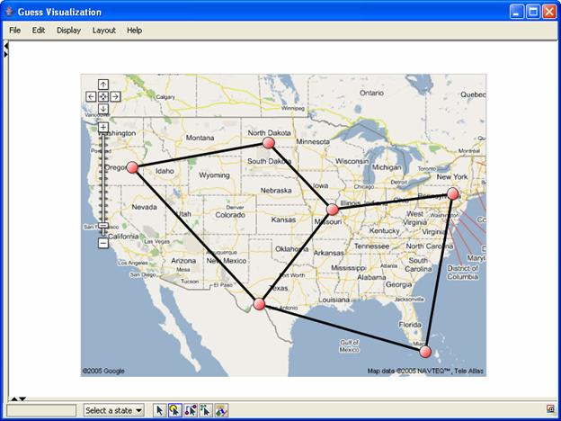
The sample program in dockexample5.py loads up an image and asks you to click on the location of two nodes on the background. Using these coordinates the program will translate and rescale your graph to fit. Creating a dockexample5 object with no parameters (e.g. dockexample5()) will use the sample map file. Alternatively you can use your own image files (e.g. dockexample5(“foo.jpg”)) instead.
15.5.4 Other Functions
In the Functions.py file in the scripts directory there are a number of additional demonstrations that implement various common functions. These include:
- removeLeaves() which iteratively removes all nodes with totaldegree <= 1
- shortcutNodes() which iteratively removes nodes that have a degree of 2 and draws a new connection between the two nodes (i.e. a–b–c will become a-c).
- condenseGraph() will remove disconnected nodes and then iterate between removing leaves and shortcutting until the graph stops changing
- skitter(field) generates a skitter plot (see: http://www.caida.org/analysis/topology/as_core_network/ )
- averageEdgeColor(edge) will color the edge by the average color of its two endpoints
- distance(node1,node2) will calculate the distance
between two nodes
16. Applets and Applications
Applets are fairly straight forward but with a few caveats. You can easily run an interpreter-less applet (take a look at test.html) as an example. This shows how to load a simple network into memory.
Unfortunately, because of the way Jython works (dynamic class loading) you will need to a) sign your applet to get a version that you can program or b) compile your jython code using jythonc to get a “static” program.
16.1 Signing GUESS
[to document]
16.2 Compiling Your Code
Take a look at the dockexample2applet.py script. The one important thing to note is that you will not be able to use many of the shortcuts (compare the script to dockexample2.py). This means that you will need to use commands like g.gemLayout() instead of gemLayout(). If you are unsure what the “real” command is take a look at Main.py which defines all the shortcuts.
We have also noticed that objects need to be declared using their full package name (so javax.swing.JSlider instead of just JSlider). We may be able to fix this in the future, but you should check your scripts here.
Once you have this and set your environment variables correctly (in particular you’ll want the same classpath that is set in guess.bat) you should be able to run the following command (in windows):
jythonc -j foo.jar -a -c -p guess --deep scripts\dockexample2applet.py
This will compile the dockexample2 toolbar into a java class and then package it inside the foo.jar file. The command will also include all the necessary python code in the jar file. The –p option tells jython to put the class in the “guess” package. This is important because there is some classloader code that tests to see if the toolbar is in the guess package before loading it. Once you have foo.jar you should be able to load test2.html which makes reference to the new toolbar (take a look at the bottom of the file where the TOOLBAR variable is defined).
If jython complains about not being able to find the compiler or something about the registry variable you’ll want to use the command:
jythonc -j foo.jar -a -c -p guess –C c:\jdk\bin\javac.exe --deep scripts\dockexample2applet.py
replacing the c:\jdk\... with the location of your javac.
16.3 Advanced Applet Features
The command getAppletContext() (or officially, com.hp.hpl.guess.Guess.getAppletContext()) will return the appletcontext object. This can then be used to control the browser. For example:
getAppletContext().showDocument(“http://...”,”windowname”) will load up a URL in a new browser window.
Notice that you can use this feature with the shiftclick event listener. When a user shift-clicks on a node or edge a new frame can be loaded that contains information about that node/edge.
16.4 Building your own Application
There are now two files in the demo directory. One (DemoApp1.java) shows you basically a minimal setup of the GUESS application. If you want all the widgets and toolbars that come with GUESS you can use that one. The second, DemoApp2.java, shows you how to just use the drawing component which you can integrate into your own application.
17. Front-end Alternatives
While we have attempted to make the visualization front-end as complete as possible, we understand that certain applications may require a different system. To that end, we have disentangled the visualization from the language and allow easy replacement of the standard visualization. Although neither is currently fully functional, you can make use of both Prefuse (http://prefuse.sourceforge.net/) or Touchgraph (http://www.touchgraph.com/) libraries for your visualization. This can be done by invoking with GUESS with the --prefuse or --touchgraph options respectively. Currently, only the Touchgraph interface responds to events like changing node coloring (and even this is incomplete). A more complete integration will be made in the future when the API has stabilized.
18. Command Line Options
When launching GUESS there are a number of command line options that can control the launch. Valid usage includes:
- guess [options] [database directory] [python files]
- guess [options] [gdf/xml file] [python files]
- guess [options] null [python files]
Options can be:
- --allgui or –a to enable the visual console
- --nowarn or –n disables warnings when loading graphs
- --persistent directory or –o directory to use an on-disk database (useful if you want to keep working with the same visualization, you can do this the first time to create the database). Be aware that this overwrites the database if it exists so you should only use this the first time you load the gdf!
- --novis or –v to disable any visualization (useful for speeding up certain operations like layouts).
- --gplfree or –f to disable gpl code in the system (limits what you can do)
- --touchgraph or –t to load the visualization in touchgraph
- --prefuse or –p to load the visualization in prefuse
- --multiedge or –m to enable support for multiple edges between nodes (off by default)
Example usage:
- guess --nowarn test.gdf foo.py will load up test.gdf without warnings and then execute foo.py
- guess --persistent database/temp null will load up GUESS with an empty graph and will save all changes to the persistent database in database/temp
19. Additional Information
- Jython home page: http://www.jython.org/
- Python home page: http://www.python.org/
Appendix A. Colors
|
|
apricot 251,213,184 |
|
aquamarine 115,253,217 |
|
bittersweet 223,45,2 |
|
black 0,0,0 |
|
|
blue 0,0,255 |
|
bluegreen 106,253,212 |
|
blueviolet 79,66,249 |
|
brickred 218,1,2 |
|
|
brown 168,0,1 |
|
burntorange 253,184,7 |
|
cadetblue 161,174,226 |
|
canary 251,252,187 |
|
|
carnationpink 250,163,253 |
|
cerulean 61,240,253 |
|
cornflowerblue 156,238,253 |
|
cyan 0,255,255 |
|
|
dandelion 252,216,112 |
|
darkgray 64,64,64 |
|
darkorchid 199,124,230 |
|
emerald 0,253,187 |
|
|
forestgreen 39,239,34 |
|
fuchsia 174,47,244 |
|
goldenrod 253,241,112 |
|
gray 128,128,128 |
|
|
green 0,255,0 |
|
greenyellow 236,252,151 |
|
junglegreen 23,253,184 |
|
lavender 251,190,254 |
|
|
lfadedgreen 241,253,230 |
|
lightcyan 227,253,254 |
|
lightgray 192,192,192 |
|
lightgreen 228,253,216 |
|
|
lightmagenta 251,229,254 |
|
lightorange 252,229,216 |
|
lightpurple 227,229,253 |
|
lightyellow 252,252,202 |
|
|
limegreen 188,252,9 |
|
lskyblue 234,247,254 |
|
magenta 255,0,255 |
|
mahogany 209,0,2 |
|
|
maroon 213,0,31 |
|
melon 252,192,187 |
|
midnightblue 0,176,198 |
|
mulberry 204,82,251 |
|
|
navyblue 57,180,254 |
|
olivegreen 13,201,7 |
|
orange 255,200,0 |
|
orangered 251,11,187 |
|
|
orchid 210,161,253 |
|
peach 252,186,148 |
|
periwinkle 170,178,254 |
|
pinegreen 8,222,111 |
|
|
pink 255,175,175 |
|
plum 182,18,253 |
|
processblue 46,253,253 |
|
purple 191,106,253 |
|
|
rawsienna 194,1,1 |
|
red 255,0,0 |
|
redorange 252,130,101 |
|
redviolet 197,13,211 |
|
|
rhodamine 250,118,253 |
|
royalblue 0,187,253 |
|
royalpurple 130,91,253 |
|
rubinered 250,14,239 |
|
|
salmon 252,181,205 |
|
seagreen 150,253,187 |
|
sepia 147,0,1 |
|
skyblue 162,253,240 |
|
|
springgreen 221,252,134 |
|
tan 236,198,176 |
|
tealblue 95,250,208 |
|
thistle 237,170,253 |
|
|
turquoise 104,253,230 |
|
violet 119,99,253 |
|
violetred 250,121,253 |
|
white 255,255,255 |
|
|
wildstrawberry 251,59,203 |
|
yellow 255,255,0 |
|
yellowgreen 196,252,139 |
|
yelloworange 253,198,7 |
The following utility commands will generate various colors:
- randomColor() will generate a single color at random
- randomColor(alpha) will generate a single random color with a given alpha (transparency)
- generateColors(start_color,end_color,count) will generate a set of count colors ranging from start_color to end_color.
Appendix B. Changes from regular Jython/Python
The following major changes have been made to the language/system (these do not include operator modifications and other standard extensions):
- The following new operators have been added: ->, <-, ->, <->, ?, roverlaps, rcontains, rcontained, rexact
- Sequence objects containing graph elements (nodes, edges) allow for property modification on all elements. For example, (a,b,c).color = red does: a.color = red, b.color = red, c.color = red
- Arbitrary java objects can have properties set and retrieved through the object.property [= value] syntax. This was previously unavailable.
- Various tweaks to make compiled Python scripts work as applets
- …